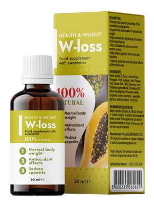
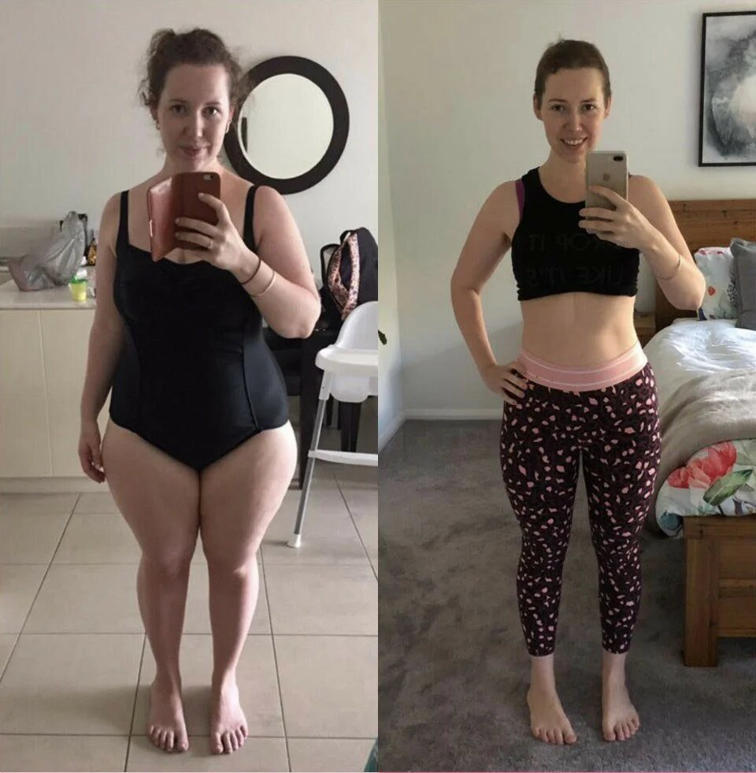
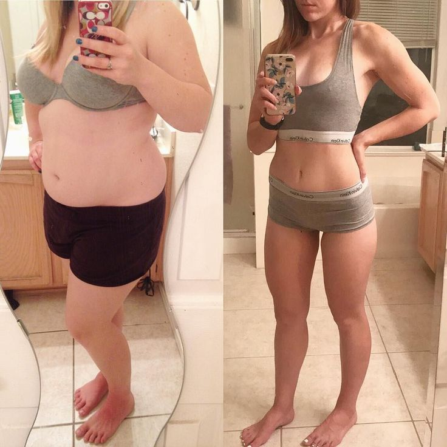
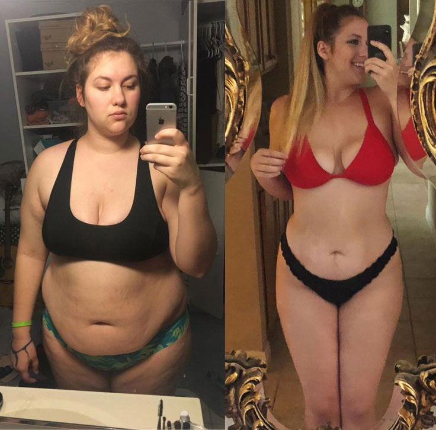

Ένας εύκολος τρόπος για να χάσετε βάρος - μια σημαντική ανακάλυψη στη σύγχρονη διατροφή;
Τελευταία ενημέρωση: 05/12/2021Οι επίσημες στατιστικές για την παχυσαρκία στον κόσμο απαριθμεί περίπου 1,9 δισεκατομμύρια υπέρβαρους ανθρώπους. Και αυτός ο αριθμός αυξάνεται συνεχώς. Ο κύριος λόγος για την ραγδαία αύξηση είναι ότι οι άνθρωποι δεν ξέρουν πώς να χάσουν σωστά βάρος και να διατηρήσουν το κανονικό βάρος. Για να χάσουν βάρος, πολλοί ακολουθούν δύο κανόνες: τακτική εξαντλητική άσκηση και καταμέτρηση θερμίδων. Δεν μπορούν όλοι να αντέξουν έναν τέτοιο ρυθμό, ο οποίος προκαλεί βλάβες. Το σώμα βρίσκεται υπό πίεση, κάτι το οποίο οδηγεί σε ακόμη μεγαλύτερη αύξηση βάρους.
Ο διατροφολόγος Keith Robinson ανέτρεψε όλα τα στερεότυπα απώλειας βάρους και αποκάλυψε έναν απλό, αποτελεσματικό τρόπο απώλειας βάρους.
- Γεια σας! Πείτε μας γιατί τόσοι πολλοί άνθρωποι υποφέρουν τελευταία από παχυσαρκία;
- Γεια σας. Ο πρώτος παράγοντας είναι η διατροφή. Είναι σημαντικό τι τρώτε και σε ποια ποσότητα. Δυστυχώς, είναι δύσκολο να τηρείτε τη σωστή διατροφή αυτές τις μέρες. Τα ράφια των καταστημάτων είναι γεμάτα με fast food, γλυκά, αναψυκτικά και άλλα πρόχειρα φαγητά, μπροστά στα οποία είναι δύσκολο να αντισταθούν.
Υπάρχουν επίσης μικροί παράγοντες που επηρεάζουν την παχυσαρκία: κληρονομικότητα, τρόπο ζωής και οικολογία. Αλλά τώρα είναι πιο σημαντικό για εμάς να μάθουμε γιατί δεν μπορούμε να χάσουμε βάρος, και όχι το γιατί παίρνουμε περιττά κιλά.
- Ναι, πραγματικά, γιατί είναι τόσο δύσκολο να χάσεις βάρος;
- Κατά τη διάρκεια της 12χρονης πρακτικής μου, έχω δει αρκετά παραδείγματα παχυσαρκίας σε άτομα κάτω των 30 ετών. Είναι όλα σχετικά με τον μεταβολισμό. Επιβραδύνει, το λίπος αποθηκεύεται πολύ πιο γρήγορα και οι αυστηρές δίαιτες προκαλούν μόνο την ενεργή του συσσώρευση.
- Και εδώ, παρακαλώ, θα ήθελα να ακούσω περισσότερες λεπτομέρειες. Θέλετε να πείτε ότι οι δίαιτες δεν σας βοηθούν να χάσετε βάρος;
- Όχι ακριβώς έτσι. Η σωστή κατανάλωση και με μέτρο, φυσικά, δεν έχει βλάψει κανέναν ακόμη. Αλλά οι αυστηρές δίαιτες, που ήταν τόσο δημοφιλείς πριν από 5-10 χρόνια, δεν φέρνουν κανένα όφελος. Θα εξηγήσω πώς έχουν τα πράγματα.
Έχοντας κάνει μια αυστηρή δίαιτα, το σώμα δεν παίρνει αρκετές από τις ουσίες που χρειάζεται. Ο εγκέφαλος το αντιλαμβάνεται ως απειλή και αρχίζει να αποθηκεύει αποθέματα λίπους για παν ενδεχόμενο και μάλιστα με διπλή ταχύτητα.
Έτσι, επιθυμώντας να απαλλαγούμε από το υπερβολικό βάρος, αντίθετα, το συσσωρεύουμε ενεργά. Ως εκ τούτου, είναι πολύ σημαντικό να χτίσετε σωστά μια δίαιτα. Τρώγοντας άφθονα, αλλά λάθος, το σώμα δεν λαμβάνει επίσης τις απαραίτητες ουσίες και συνεχίζει να συσσωρεύει λίπος και να μην το μετατρέπει σε ενέργεια.

- Είναι δυνατόν να χάσετε βάρος κάνοντας σπορ χωρίς να αλλάξετε τη διατροφή;
- Η άσκηση είναι πολύ σημαντική. Αλλά ο αθλητισμός είναι μόνο 20-30% της απώλειας βάρους. Δεν χάνετε τόσο πολύ βάρος όσο ενισχύετε τον μυϊκό κορσέ εάν η προπόνηση έχει επιλεγεί σωστά. Η κύρια απώλεια βάρους σχετίζεται με την ρύθμιση της διατροφής Γι 'αυτό πολλοί άνθρωποι ενώ δεν κάνουν σπορ, αρχίζουν να χάνουν ενεργά βάρος όταν αλλάζουν τη διατροφή τους.
- Και τι γίνεται σε αυτήν την περίπτωση; Υπάρχει άλλος τρόπος να χάσεις βάρος;
– Υπάρχουν διάφοροι τρόποι: χειρουργικές επεμβάσεις, ενέσεις με μέσα καλλυντικών, μασάζ κατά της κυτταρίτιδας και περιτυλίγματα. Όμως όλα αυτά είναι αναποτελεσματικά αν δεν ακολουθείτε ειδική διατροφή. Ως εκ τούτου, μια μέθοδος εργασίας για την απώλεια βάρους είναι μόνο αυτή κατά την οποία ακολουθείται προσεκτικά ειδική διατροφή. Θα πρέπει να περιλαμβάνει όλες τις βιταμίνες και τα μέταλλα που χρειάζεται το σώμα, συμπεριλαμβανομένων εκείνων που στοχεύουν στην επιτάχυνση του μεταβολισμού. Μόνο σε αυτήν την περίπτωση θα αρχίσει να μειώνεται το βάρος..
Τέτοια τρόφιμα είναι δύσκολο και ακριβά στην παραγωγή. Ως εκ τούτου, προτείνω να αγοράσετε ειδικά φυσικά συμπληρώματα για απώλεια βάρους.
- Πείτε μας για κάποιο συμπλήρωμα.
- Το πιο αποτελεσματικό συμπλήρωμα κατά τη γνώμη μου είναι το . Περιέχει όλες τις απαραίτητες ουσίες για το σώμα, δεν χρειάζεται καν να σκέφτεστε τη σωστή διατροφή με αυτό. Το αποτέλεσμα μπορεί να φανεί από την πρώτη κιόλας εβδομάδα!

Συνιστώ το για άτομα με διάφορους βαθμούς παχυσαρκίας. Το αποτέλεσμα είναι πάντα το ίδιο - απώλεια μάζας λίπους 40% σε μία πορεία με ελάχιστη απώλεια μυϊκής μάζας. είναι μια πραγματική ανακάλυψη στη σύγχρονη διαιτολογία!
- Δεν έχω ξανακούσει για τέτοια συμπληρώματα. Για να είμαι ειλικρινής, δεν μπορώ να πιστέψω ότι είναι εύκολο να χάσω αυτά τα επιπλέον κιλά τόσο εύκολα.
- Αυτό είναι πραγματικά κάτι ασυνήθιστο. Πολλοί άνθρωποι παραμένουν της άποψης ότι είναι απαραίτητο να καταβληθούν απίστευτες προσπάθειες για να χάσουν βάρος. Αλλά τώρα η ιατρική έχει κάνει ένα μεγάλο βήμα και η διαδικασία της απώλειας βάρους έχει γίνει πολύ πιο εύκολη από ότι πριν από 5 χρόνια. Οι ασθενείς μου επίσης διστάζουν στην αρχή όταν τους προτείνω το . Αλλά τα αποτελέσματά τους μιλούν από μόνα τους.

- Είναι καταπληκτικό. Πόσο μπορείτε να αδυνατίσετε σε ένα μήνα με αυτόν τον τρόπο;
- Όλα εξαρτώνται από τον δείκτη μάζας σώματος, την ισορροπία νερού, το ποσοστό λίπους, μυών και οστικής μάζας. Κατά μέσο όρο, υπάρχει μείωση του βάρους κατά 5-10 κιλά ανά κύκλο θεραπείας. Αλλά υπάρχουν και άλλα αποτελέσματα. Θα σας δώσω ένα συγκεκριμένο παράδειγμα. Ένας από τους ασθενείς μου στην ηλικία των 28, με ύψος 165 εκατοστά, ζύγιζε 99 κιλά.
Δεν του έφτιαξα δίαιτα και δεν του πρότεινα να κάνει γυμναστική. Συνέστησα ένα μηνιαίο κύκλο θεραπείας με το και ζήτησα από την ασθενή να κρατά ένα ημερολόγιο όπου θα καταγράφει τα αποτελέσματά της κάθε εβδομάδα:
1 ΕΒΔΟΜΑΔΑ
Βελτιωμένη ποιότητα ύπνου και περισσότερη ενέργεια.
Μεγέθη:
- στήθος: -3 cm
- κοιλιά: -4 cm
- γοφοί: -3 εκ
Βάρος: -3 kg
2 ΕΒΔΟΜΑΔΑ
Ο ασθενής σημείωσε ότι η αίσθηση της πληρότητας προέρχεται από το μισό από το συνηθισμένο μέρος της τροφής. Η ανεξέλεγκτη όρεξη έχει εξαφανιστεί.
Μεγέθη:
- στήθος: -6 cm
- κοιλιά: -8 cm
- γοφοί: -8cm
Βάρος: -6 kg
3 ΕΒΔΟΜΑΔΑ
Η ασθενής σημείωσε ότι ένιωθε καλά ακόμα και μετά από τροφές που συνήθως προκαλούσαν δυσφορία στο στομάχι: γαλακτοκομικά προϊόντα και όσπρια. Αυτό σημαίνει ότι η διαδικασία πέψης έχει βελτιωθεί και δεν επιτρέπει στα προϊόντα να κατακάθονται στα εντερικά τοιχώματα και να προκαλούν διαδικασίες ζύμωσης..
Μεγέθη:
- στήθος: -7 cm
- κοιλιά: -11 cm
- γοφοί: -10 cm
Βάρος: -12 kg
4 ΕΒΔΟΜΑΔΑ
Παρατηρήθηκε φρεσκάδα καθ 'όλη τη διάρκεια της ημέρας και αύξηση της αποτελεσματικότητας. Επίσης, οι αναλύσεις κατέγραψαν μείωση στα επίπεδα γλυκόζης στο αίμα. Μέχρι το τέλος του πειράματος, η ποσότητα του λίπους στο σώμα του ατόμου μειώθηκε κατά 9% και κυμάνθηκε εντός ο γενικός κανόνας - 27%.
Μεγέθη:
- στήθος: -8 cm
- κοιλιά: -14 cm
- γοφοί: -12 cm
Βάρος: -18 κιλά

Αυτό το πείραμα απέδειξε ότι το είναι ένας παράγοντας εργασίας. Τα ενεργά συστατικά του βελτιώνουν σημαντικά την πέψη, το μεταβολισμό και το μεταβολισμό των υδατανθράκων, των θερμίδων που καταναλώνονται, αλλά και του αποθηκευμένου λίπους, μετατρέποντας το σε ενέργεια. Αυτός είναι ο λόγος για τον οποίο οι ασθενείς παρατηρούν μια μεγάλη έκρηξη ενέργειας κατά τη διάρκεια του κύκλου θεραπείας.
- Σας ευχαριστώ για την τόσο αποκαλυπτική συνέντευξη. Νομίζω ότι βοηθήσατε πολλούς ανθρώπους και τώρα θα είναι πολύ πιο εύκολο για αυτούς να χάσουν βάρος. Έχω μόνο μια ερώτηση να σας κάνω: πού μπορώ να βρω αυτό το φάρμακο;
- Το φάρμακο έχει ήδη περάσει όλα τα απαραίτητα στάδια της δοκιμής και έχει λάβει τα κατάλληλα πιστοποιητικά ποιότητας. Ίσως φέτος να εμφανιστεί το στα φαρμακεία, αλλά μέχρι στιγμής μπορώ να αγοράσω μόνο στον επίσημο ιστότοπο. Για να είμαι ειλικρινής, θέλω να το παραγγείλω απευθείας. Με αυτόν τον τρόπο προστατεύω τον εαυτό μου από τις απομιμήσεις και πολύ συχνά πετυχαίνω εκπτώσεις.


Και εγώ νόμιζα ότι δεν είχα αρκετή βούληση. Προσπάθησα να ακολουθήσω αυστηρές δίαιτες, και το βάρος δεν έφευγε σχεδόν καθόλου. Σας ευχαριστούμε που εξηγήσατε τα πάντα με λεπτομέρεια, τώρα καταλαβαίνω τι συμβαίνει.
Μου συνταγογραφήθηκε επίσης το ΧΧ από έναν διατροφολόγο, το παίρναμε με τον σύζυγό μου, -17 κιλά αυτός, -12 εγώ. Είμαστε πολύ ευχαριστημένοι με το αποτέλεσμα, και αυτό παρά το γεγονός ότι δεν πάμε στο γυμναστήριο, αθλούμαστε στο σπίτι.

Γιατί μερικοί τρώνε και αδυνατίζουν, ενώ άλλοι προσπαθούν να περιορίσουν τον εαυτό τους σε όλα, αλλά το βάρος δεν μειώνεται;
όλα εξαρτώνται από το μεταβολισμό σας. Εάν έχετε κακό μεταβολισμό, τότε θα παίρνετε κιλά ούτως ή άλλως. Αυτή η θεραπεία βοηθάει στην επιτάχυνση του μεταβολισμού έτσι ώστε το ίδιο το σώμα να απαλλαγεί από τα περιττά κιλά. Μια πολύ χρήσιμη θεραπεία.
Δεν έχω καθόλου θέληση. Προσπάθησα να κάνω δίαιτα αρκετές φορές, κρατιόμουν για 3 ημέρες το πολύ.
Για να χάσεις βάρος πρέπει να όργεις στο γυμναστήριο για αρκετές ώρες! Έχω χάσει 10 κιλά σε έξι μήνες.
Χρειάζομαι επειγόντως αυτή τη θεραπεία! Οι δίαιτες δεν βοηθούν καθόλου, και μου είναι πολύ δύσκολο να τις ακολουθήσω. Επιτέλους, βρήκαν κάτι και για εμάς, τους τεμπέληδες :)
Οι δίαιτες μπορεί να μην είναι το κύριο πράγμα, αλλά σίγουρα δεν χρειάζεται να τρώτε γλυκά, αν θέλετε να απαλλαγείτε από το λίπος, το έχω δοκιμάσει πάνω μου.
Στην πραγματικότητα, είναι πολύ δύσκολο να απαλλαγείτε από το συσσωρευμένο λίπος μόνοι σας, σίγουρα χρειάζεστε επιπλέον βοήθεια . Συνήθιζα να παίρνω άλλα συμπληρώματα, αλλά εξακολουθούν να μην έχουν το ίδιο αποτέλεσμα με το . Είναι σύνθετο μέσο, δεν έχω να προσθέσω κάτι. 43 ετών, ξεφορτώθηκα εντελώς την κυτταρίτιδα και το υπερβολικό λίπος. Δεν πίστευα καν ότι αυτό ήταν δυνατό.

Δεν αντέχω άλλο το να είμαι παχύς. Δεν μπορώ να απαλλαγώ από τα περιττά κιλά στην κοιλιά μου με κανέναν τρόπο. Και τα χέρια μου είναι τόσο παχιά, δεν μπορώ ούτε καν να φορέσω μπλουζάκι, πρέπει συνεχώς να φοράω κάτι από πάνω, γιατί κομπλάρω. Θα δοκιμάσω και εγώ αυτό το φάρμακο.
Χρησιμοποιώ επίσης το , μετά τον τοκετό έχασα 19 κιλά μαζί του.
